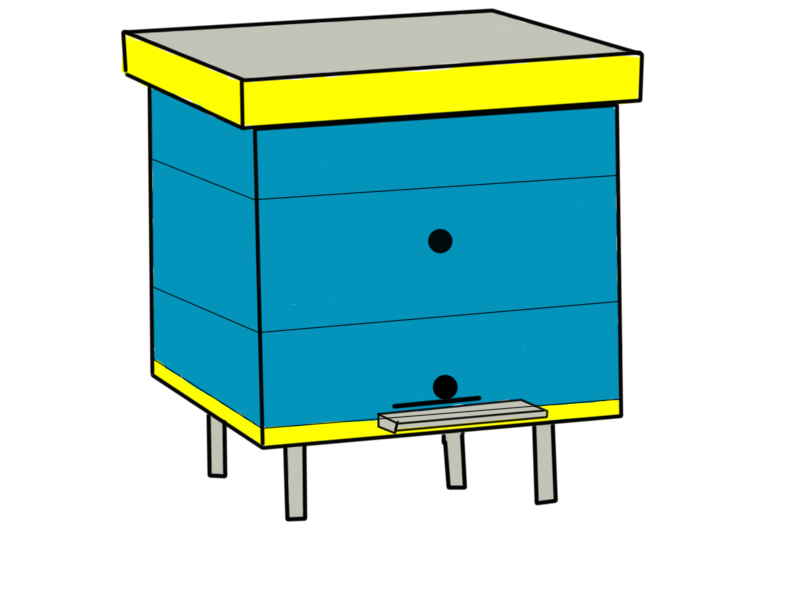
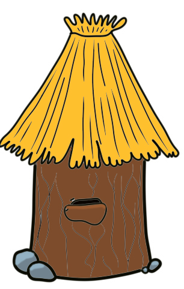

Догляд за бджолами

Медоносні бджоли мають потребу у відході. Однак це зовсім не
означає, що за ними потрібно цілодобово стежити, заглядати
у вулик, щоб навести в ньому чистоту й порядок, давати корм
або воду. На відміну від свійських тварина бджолині родини
самі добувають собі їжу й воду, забезпечують необхідний
комфорт у своїх багатонаселених гуртожитках, охороняють
льотки. Інша справа - розумно й вчасно допомогти комахою
в тім, із чим вони самі по тій або іншій причині не можуть
упоратися. Будь-яке втручання в життя мешканок вулика
викликає в них занепокоєння, різко порушує мікроклімат
воскового гнізда, відволікає комах від внутриульевых
і польових робіт, сприяє вповільненню росту бджолиної
родини. У потривоженому вулику бджоли збігають зі
стільників, припиняють годівля й обігрівання розплоду,
догляд за яйцекладущей маткою, будівництво воскового
гнізда, різко знижується виліт складальниць нектару за
взятком. Тому бджоляр повинен як можна рідше турбувати.
бджіл розбиранням гнізда, а при необхідності проводити
це так, щоб в один прийом при мінімальних витратах
часу (не більше 10 мінут на обслуговування однієї
бджолиної родини) був виконаний весь комплекс заходів
щодо відходу, що забезпечує нормальну життєдіяльність
бджолиної громади на можливо більший проміжок часу
(15-20 днів). Щоб уникнути повторного втручання в
життя бджолиної родини, необхідно завчасно переглянути
записи в щоденнику, підготувати інвентар, стільники,
рамки з вощиною, інструменти, запалити дымарь, вимити
з милом особа й руки, надягти халат і лицьову сітку й приступитися до огляду бджолиних родин. Неодмінна умова роботи із бджолами - чистота й акуратність. Розбирання бджолиного гнізда в непогоду, тривалі огляди,
що залучають увагу бджіл- злодійок, раптова припинення хабар,
зловживання димом при подкуривании, необережні удари об
вулики, запах алкоголю, поту, бензину, суєта над відкритим
гніздом і біля льотків - все це дратує мешканок вуликів.
Бджолине злодійство найчастіше виникає з вини самого
недосвідченого бджоляра. Найбільше цьому сприяє необережний
обіг зі стільниками, коли їх виймають із вулика й залишають
відкритими для доступу чужих бджіл, випадково вимазаний
медом вулик, коли до нього приставляють рамки, вийняті
із гнізда під час огляду родини, розлитий сироп,
недотримання часу годівлі бджіл, а також зміст слабких
родин на невідповідних їхній силі гніздах і надмірно
розширених льотках. Щоб уникнути бджолиного злодійства
на пасіці, не слід турбувати родини оглядами в
безвзяточные дні, вчасно забезпечувати їхнім необхідним
запасом кормів (не менш 8- 10 кг меду на
бджолину родину), робити підгодівлю тільки ввечері
після припинення літа бджіл і не розливати сироп
біля вуликів, не залишати неприбраними запасні
стільники й воскову сировину. Виявивши бджолине
злодійство, невідкладно вживають
заходів по виявленню й усуненню його причини. У що
подвергнулись нападу злодійок бджолиної родини
скорочують льоток до проходу 1-2 бджіл, на прилітну дошку
кладуть мокрі стебла трави, щоб бджоли- злодійки боялися
відкрито проникнути в чужий вулик через льоток, потім
періодично змочують холодною водою віник і отпугивают їм
нападаючих бджіл від вулика.
 Одночасно виявляють родину-
злодійку, звертаючи увагу на підвищену активність окремих
родин. У родині, подвергшейся нападу, закривають на кілька
мінут льоток, потім його знову відкривають і пчелЪЪ, що
вилітають, що скопилися на виході, обсипають борошном.
Мічених бджілзлодійок не важко буде помітити на прилітній
дошці свого вулика, у який вони вернуться з награбованою
ношею. Щоб припинити грабіж, родину- злодійку спочатку
сильно підкурюють димом, а потім скорочують льоток вулика.
Якщо цього виявиться недостатньо, вулик повертають льотком
у протилежну сторону. Останньою мірою, до якої повинен
удатися бджоляр у випадку що не припиняється напада, -
накрити вулик брезентом або віднести його в прохолодний
льох. Однак краще попередити бджолине злодійство на
пасіці, що може легко перерости в масовий напад одних
родин на інші, чим потім боротися з ним. Розгарбуванню
піддаються в першу чергу слабкі родини бджіл, що потім
коштують поруч середні й навіть сильні. Роздратовані
комахи нападають на людей і тварин, жалятся й гинуть.
У кожного бджоляра є свої секрети, особливі способи
догляду за родинами бджіл, стосовно до конкретним
кліматичного й природно- економічним умовам
їхнього змісту. Тому неможливо рекомендувати всім
без винятку бджолярам, з якої сторони підходити
до вулику, яку систему вулика вибрати, виводити
маток тільки штучним способом, проводити зимівлю
бджіл у приміщенні, а не на волі й т.п. Вибір у
кожному конкретному випадку повинен зробити він
сам. Бджоли, коли їх містять у неволі, мають
потребу в такій системі відходу й змісту, при якій не порушувалися
б їхні біологічні потреби в розвитку й розмноженні,
нагромадженні в гніздах достатньої кількості медоперговых
запасів. Навесні після очисного обльоту бджіл звичайно
швидко оглядають гнізда й заміняють непридатні стільники,
поповнюють відсутні запаси корму, переконуються в наявності
оду, скорочують і утеплюють гнізда, звужують льотки. Пізніше,
коли встановиться тепла погода, на пасіці проводять санітарні
заходи: видаляють із вуликів загиблих комах, заміняють у
гніздах відвологлі утеплювальні мати або подушки, прочищають
льотки. По наявності розплоду бджоляр переконується в
цілісності матки в родині бджіл і визначає її якість.
Відсутні корми поповнюють медоперговыми стільниками із
запасу або ж підгодовують бджіл густим, теплим цукровим
сиропом (2 кг цукру на 1 л окропу), дають спонукальну
білкову підгодівлю. Для профілактики нозематозу в
сироп додають фумагилин. Ослаблені в зимівлі бджолині
родини, що мають непоганих торішніх маток, підсилюють
рамками друкованого розплоду й молодих бджіл, яких
беруть від здорових, добре перезимованих родин. Дуже
слабкі й безматочні родини бджіл поєднують або
приєднують до запасних маток. Перше весняне розширення
бджолиних гнізд, що збігає із зацвітанням плодових
дерев, виробляється маломедными стільниками; друге -
не повністю відбудованими в минулому сезоні
стільниковими рамками, а з настанням значного хабар
для бджіл з лугового й лісового різнотравя - штучною
вощиною. Необхідність кожного наступного розширення
бджолиних гнізд визначається по наявності друкованого
розплоду в стільниках. Так, якщо другий від діафрагми,
що обмежує гніздо, стільник зайнятий розплодом, виходить,
родині необхідно дати для розширення дві або три рамки
штучної вощини, що ставиться від центра гнізда між
кормовими й расплодными незапечатаними стільниками.
Сильним родинам бджіл можна ставити штучну вощину для
їхнього розширення й у середину гнізда. Будівництво
стільників відволікає бджіл від підготовки до роїння,
сприяє кращому використанню медозбору. Одночасно на
пасіці проводять профілактичні й лікувальні заходи
проти захворювань бджіл, формують ранні отводки, при
необхідності підгодовують бджіл сиропом, тому що
припинення хабар у природі порушує стабільний
розвиток бджолиних родин і будівництво стільників.
У червні продовжують розширювати гнізда бджолиних
родин, переважно рамками зі штучною вощиною, ставлять
на основні корпуси вуликів магазинні надставки й другі
корпуси, формують нові родини бджіл, виводять маток,
вивозять пасіки в кочівлю на предосновной медозбір з
жостери й малини. У липні використовують основний
медозбір з липи, кипрея й господарств, що
висіваються на полях, і форм - гречки, насінників
конюшини, рапсу, буркуну, інших медоносних культур
запилюються, що бджолами,, після чого роблять
відкачку меду. У серпні попередньо становлять
гнізда бджолиних родин до зимівлі, роблять
перевірку меду на падь і обробку бджіл проти
варроатоза; скармливают сироп для поповнення
відсутніх у гніздах запасів корму або його
часткової заміни на цукровий сироп. Одночасно
вживають заходів по нарощуванню молодих
бджіл до зимівлі. В окремих районах
вивозять пасіки в ліс до квітучих масивів вересу.
У вересні откачивают вересковый мед, не допускаючи
його запечатування в стільниках, після
чого остаточно становлять гнізда бджолиних родин
з таким розрахунком, щоб у кожному соте було не
менш 2-2,5 кг меди. У випадку недостачі кормів
в окремих родинах бджіл знову підгодовують
сиропом або підставляють у гнізда готові рамки
з медом, залишаючи стільки стільників, скільки
їх можуть щільно обсиживать бджоли. З настанням
холодів вулики добре утеплюють
і на льотки ставлять загороджувачі від мишей.